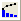

The pareto chart is a special type of bar chart accompanied with a line graph. Typically, the vertical bars, whose heights reflect the frequency or impact of problems, are in descending order of significance and the line graph is ascending monotonously.
Pareto charts can be used to identify factors that have the greatest cumulative effect on the system. Thus, it is helpful in screening out the less significant factors in an analysis.
If you have already had binned data, you can create a pareto chart from it by using the Plot: 2D: Pareto: Pareto Chart - Binned Data menu command, or click the Pareto Chart - Binned Data button  on the 2D Graphs toolbar. This will bring up the plot_paratobin dialog.
If you have raw data, you can create a pareto chart from it by using the Plot: 2D: Pareto: Pareto Chart - Raw Data menu command, or click the Pareto Chart - Raw Data button  on the 2D Graphs toolbar. This will bring up the plot_paratoraw dialog.
on the 2D Graphs toolbar. This will bring up the plot_paratoraw dialog.
The following example shows you how to create pareto chart from binned data and raw data, respectively.
To plot pareto chart from binned data:
To plot pareto chart from raw data: